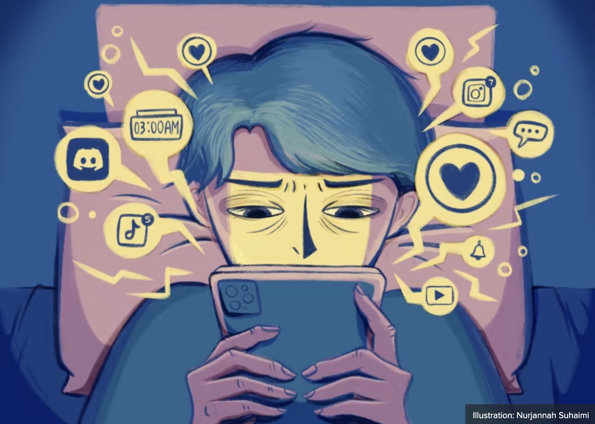

Social Media and Isolation
It is thought that the time we're currently living should make us feel more connected than ever with others around the world. Statistics indicate that approximately 70% of adults in the U.S. possess at least one social media account, with the average user maintaining seven accounts. However, it is found that the more we try to connect to the virtual world, the more we're pushed to isolation from the real world. 1 in 5 people report that they are lonely forms a paradox because the main idea of social media is to connect us with others. Whileas, 51% of young adults in the 18-24 age bracket express difficulty giving up their social media.
Impact on Health
Solitude poses a grave threat, causing more health issues than users may have anticipated. The lack of social connection is similar to the effects of smoking 15 cigarettes per day or grappling with an alcohol use disorder . It takes a toll on both physical and mental health, twice as much as obesity, and increases the risk of premature mortality (death occurring before the age of 75). Furthermore, some other health complications it can be linked to include depression, impaired executive function, poor cardiovascular function, impaired immunity at every stage of life, accelerated cognitive decline, increased stress levels, and poor sleep quality.
Dopamine Rush
Dopamine is released in response to the pleasure derived from a sense of achievement. Social media changed the trajectory of how much dopamine is released to a person by incorporating features such as counters and infinite scrolls, which get the brain hooked on dopamine at specific intervals. These intervals are dictated by the algorithms that gather information on strong emotions on how a user reacts, such as anger or sadness so the app can show more of that content. Social media has altered the natural balance of dopamine by giving a quick rush, which makes the pleasure of everyday conversations feel mundane. In face-to-face interactions, dopamine is released slowly, contrasting with the constant scrolling on social media platforms, where users keep scrolling for the next immediate rush. Having constant highs makes the lows feel even lower, which makes it harder to enjoy the beauty of real-life interactions.
FOMO Culture
The FOMO (Fear of Missing Out) culture makes individuals stay chronically online, and eagerly hop on the latest trend to foster a sense of belonging to a virtual community. However, staying online for most of your life can greatly affect how realistic your expectations are held. There are fewer face-to-face interactions and people start to envy how others live their lives and how others look. Whereas in real life there is a pool of only close people, social media pushes individuals into a realm of constant comparison leading to low self-esteem.
The FOMO culture is hard to hide when everyone within one's social circle is in the online world. The situation worsens when staying constantly updated on the latest stories to just find out that personal friends have been invited to events or parties without including you. A striking 53% of teens have encountered instances where there was a post about parties that they weren’t invited to. These parties and lavish events can present a different side of a person than what is perceived in real life. 85% of teens acknowledge that people show different sides of themselves on social media that they cannot display offline.
In addition, 77% also say that people show a less authentic life on social media compared to how they live in real life. The majority of teens and adults plan how to present themselves to others on social media. There is pressure to design an online presence that shows only the best version of one's life which would garner the most comments or likes. The constant posting and lack of authenticity can lead to false information spreading, especially about gossip. 42% of teens experience people posting things about them that they can’t change or control. The strive to seek validation from strangers who don't know us on an individual level is a big effect of FOMO culture. The likes and comments are used to determine one's social standing in society.